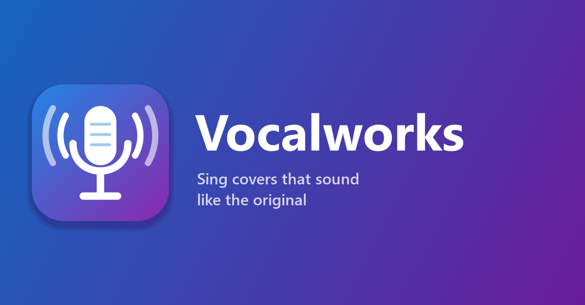

🧠 Selected for the XERJ Corpus Hub🧠 XERJ Corpus Hub'a seçildiVocalworks
A Windows app for singing covers. Pick a song, record yourself singing along, and get the song back with your voice in it, processed to sound like the original vocal.
Cover şarkı söylemek için bir Windows uygulaması. Bir şarkı seçin, eşlik ederek kendinizi kaydedin ve şarkıyı, orijinal vokal gibi duyulacak şekilde işlenmiş kendi sesinizle geri alın.
What it doesNeler yapar
- Matches the original automatically: pitch correction, tone, compression, room, stereo width, distortion, tape hiss and loudness are measured from the original vocal and applied to yours.
- Orijinali otomatik olarak eşler: pitch düzeltme, ton, kompresyon, oda, stereo genişlik, distorsiyon, bant cızırtısı ve ses yüksekliği orijinal vokalden ölçülür ve sizin vokalinize uygulanır.
- Records in the app: the song plays in your headphones with a count-in and karaoke-style synced lyrics, with or without the original singer.
- Uygulama içinde kayıt: şarkı, geri sayım ve karaoke tarzı senkron sözlerle kulaklığınızda çalar; orijinal şarkıcıyla ya da onsuz.
- Runs on your own PC: no account needed. Demucs splits vocals from the instrumental locally; everything else is classic signal processing.
- Kendi bilgisayarınızda çalışır: hesap gerekmez. Demucs vokali enstrümantalden yerel olarak ayırır; geri kalan her şey klasik sinyal işlemedir.
- One-click install: an installer sets up Python and the app's libraries, using an NVIDIA GPU when there is one.
- Tek tıkla kurulum: bir yükleyici Python'u ve uygulamanın kütüphanelerini kurar, varsa NVIDIA GPU'dan yararlanır.